THE PEACE COLLECTION · 01
A little blue, a little peace
Deep blue glaze, warm earthy tones, and a simple reminder to choose peace. Made by hand, one of a kind.
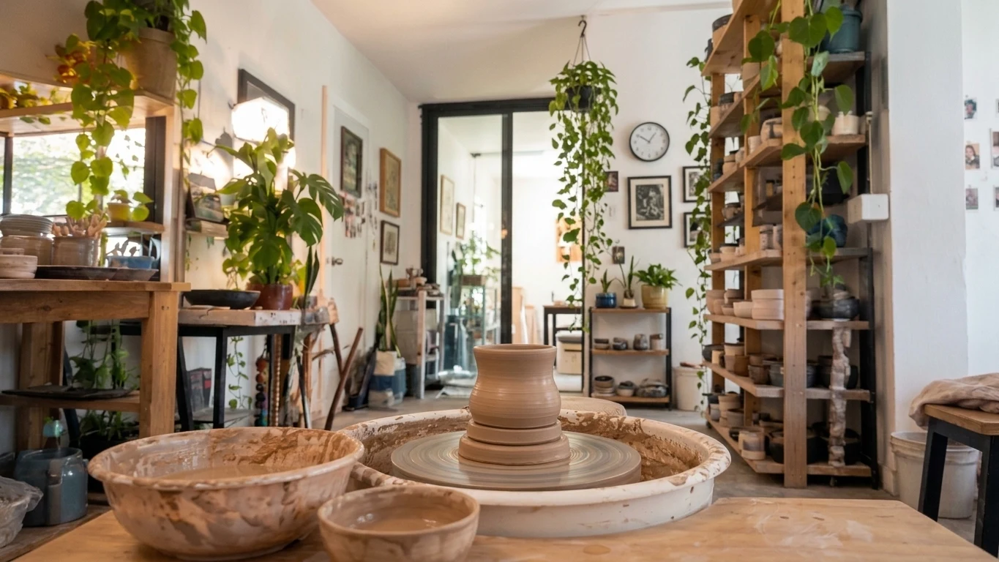
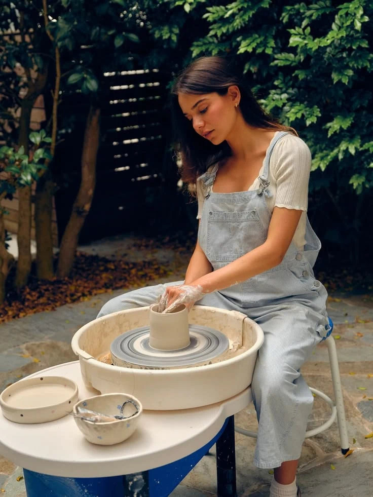
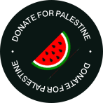
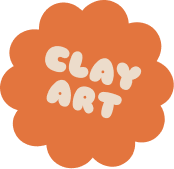
World peace is the reason we make art. Every piece is made with love, shaped with care, and created to bring a little peace into the everyday.
A little company for your everyday rituals. Explore handmade mugs with earthy glazes, playful details, and a little reminder to choose peace. Each piece brings its own character to the table.
THE PEACE COLLECTION · 01
Deep blue glaze, warm earthy tones, and a simple reminder to choose peace. Made by hand, one of a kind.
THE PEACE COLLECTION · 02
Forest green meets raw clay. A handmade companion for slow mornings and your favourite cup of something warm.
FROM THE STUDIO · 03
A quiet moment at the wheel. Every piece starts here, with a handful of clay and room for possibility.
A WORK IN PROGRESS · 04
There’s beauty in the making. Following the clay, finding a shape, and letting each piece become its own.
THE HANDS BEHIND THE CLAY
For me, pottery is a way to slow down. To work with my hands, get a little messy, and turn something simple into something meaningful.
I’m drawn to earthy colours, playful shapes, and the little imperfections that make a piece feel alive. No two come out quite the same — and that’s the lovely part.
This is a space for the things I make, the things I care about, and all the small moments in between. I’m glad you’re here.
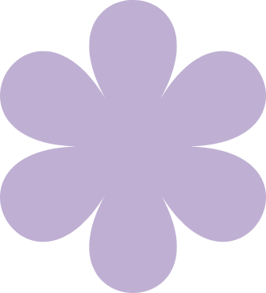
HOW IT WORKS
From a lump of clay to a piece to call your own.
Shaped by hand, glazed with care,
and made to be part of your everyday.
It starts with earth. Clay is wedged by hand to work out air bubbles and make a soft, even canvas for a new piece.
A little water keeps the clay moving. On the wheel or between my hands, walls rise, curves soften, and a shape finds its way.
Then comes the slow part. The piece firms up, gets trimmed and refined, and rests until it is completely dry. Good things take their time.
The kiln turns fragile clay into ceramic. After a first firing, I add glaze and fire it again, bringing colour, texture, and a little surprise to the surface.
Once cooled, every piece is checked and its base smoothed. Then it is ready for your morning coffee, a shared table, and all the little rituals that make a day.
A LITTLE LIFE OUTSIDE THE STUDIO
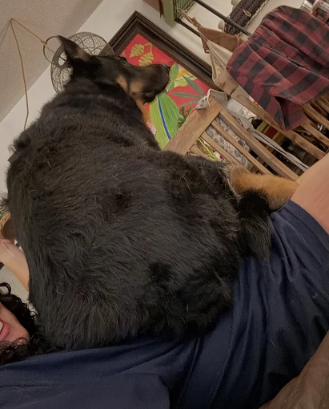
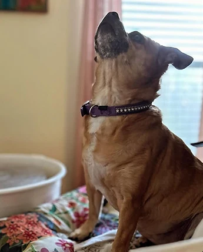
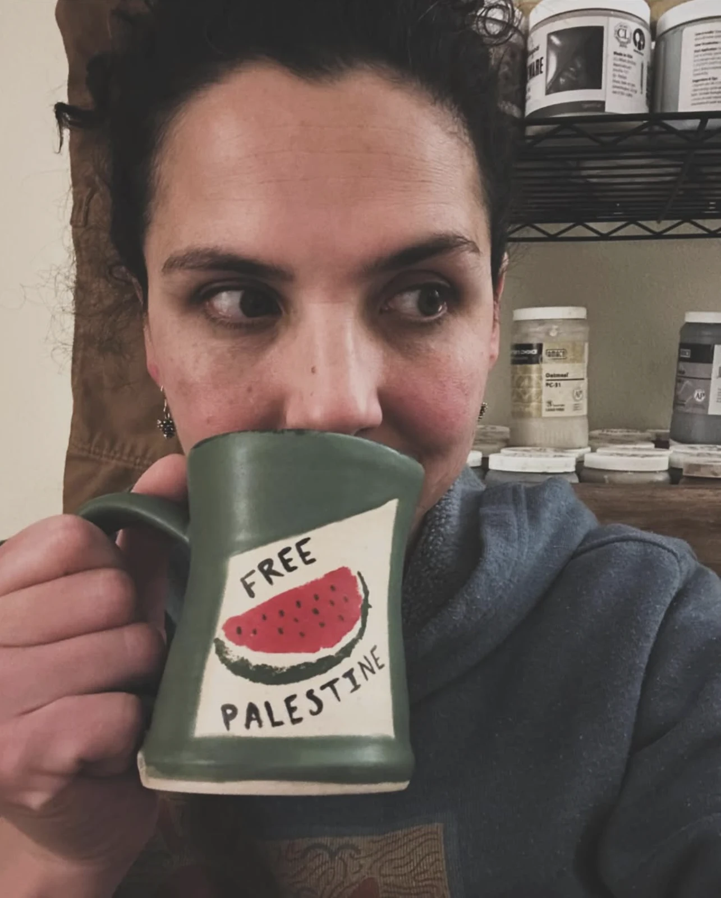
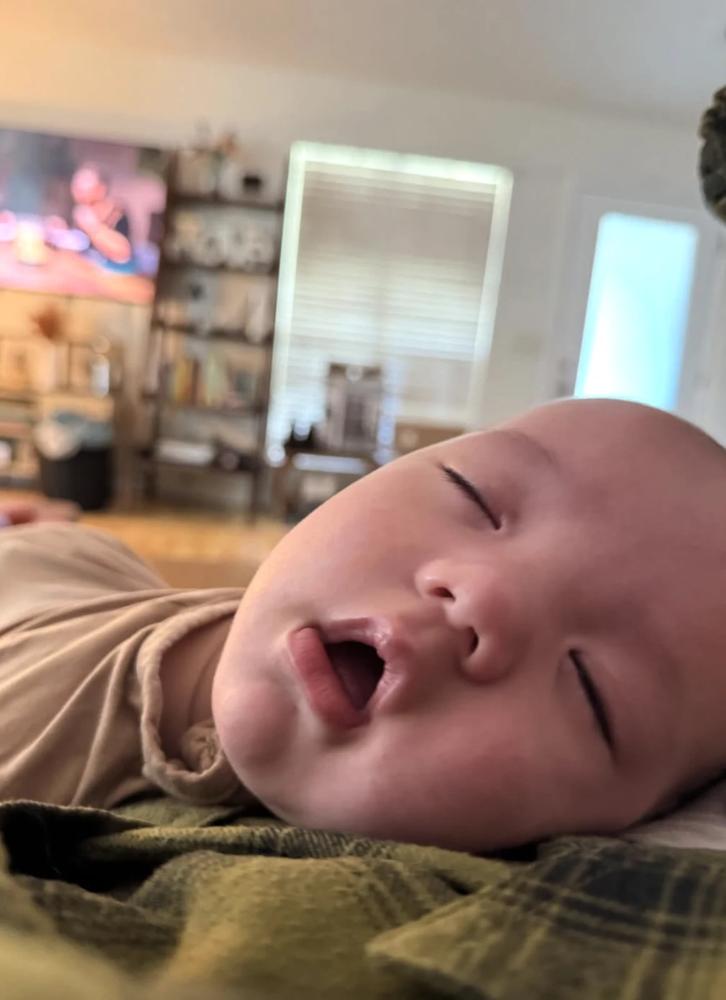
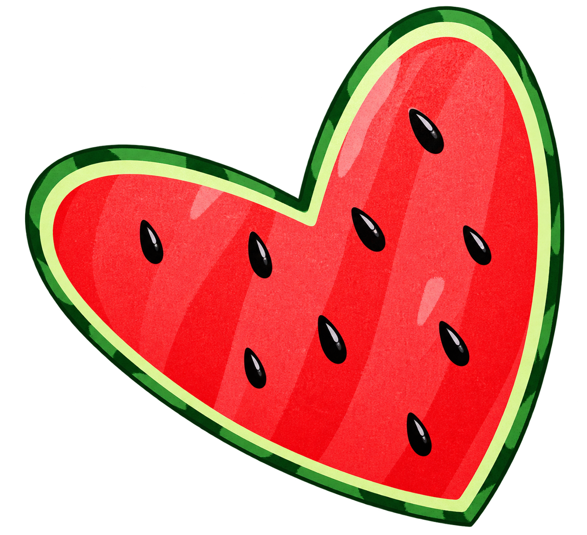
Making art with love means making room for care. This is a little corner of the studio dedicated to solidarity with the people of Palestine.
A handmade mug. A meaningful gesture. For available pieces, ordering details, and ways to support, visit Pottery for Palestine.
Order here ↗INSTAGRAM · ZELLE · VENMO
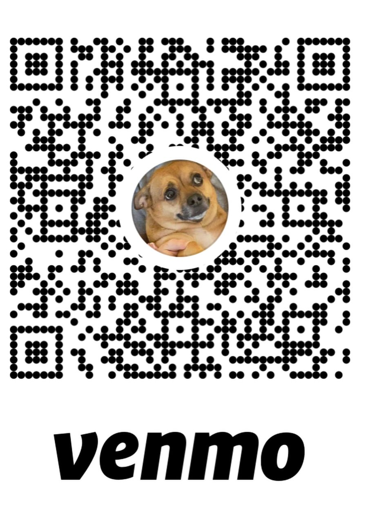
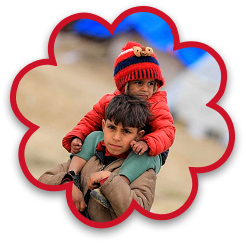
LET’S MAKE SOMETHING MEANINGFUL
A morning mug. A bowl for your favourite meal. A small gift with a little soul. Tell me what you have in mind, and let’s find a handmade piece that feels like you.
Interested in pottery that supports people affected by the crisis in Palestine? Ask about the pieces available through Pottery for Palestine and the relief efforts they support.
We’ll confirm availability, price, delivery, and any donation contribution before you decide to order. A conversation is the first step.